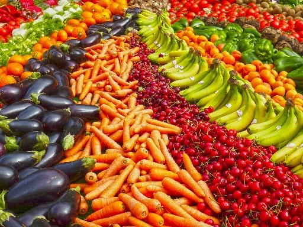
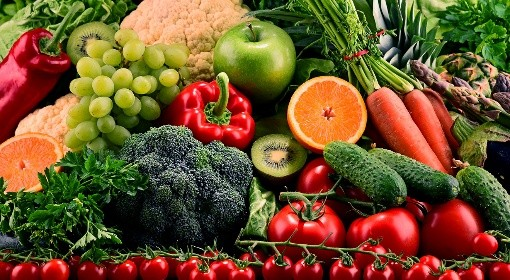

Conhecendo os alimentos: do natural aos industralizados
Os alimentos IN NATURA são alimentos obtidos diretamente de plantas ou animais sem passar por qualquer alteração após saírem da natureza. Eles formam a base de uma dieta saudável, sendo ricos em nutrientes e livres de aditivos, como frutas, legumes, ovos e carnes. Incluem também alimentos minimamente processados, como grãos secos ou leite
Da aonde eles vem??? Alimentos naturais vêm diretamente da natureza (terra, água, plantas e animais), sem passar por processos industriais que adicionem substâncias químicas. Eles são divididos em três grupos: vegetal (frutas, verduras, grãos, raízes), animal (carnes, ovos, leite) e mineral (água e sal), sendo essenciais para a saúde. Exemplos: Tomate, Banana Alface, Cenoura, Maça São obtidos diretamente de plantas ou animais sem sofrer alterações após a colheita ou abate, preservando integralmente nutrientes como fibras, vitaminas e sais minerais. Eles não contêm conservantes, corantes ou aditivos químicos, ao contrário dos ultraprocessados.

<